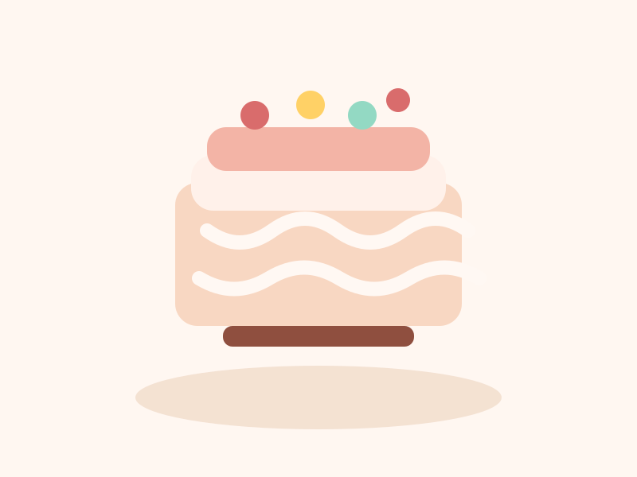

Graneros bakery for sweet moments
Fresh cakes and treats for birthdays, baby showers, and family celebrations.
Sweet Tooth helps families in Graneros and Rancagua order desserts that feel homemade, warm, and ready for special days. Browse our best sellers, discover celebration ideas, and plan your order with a simple calculator.

Best sellers
Favorites customers come back for
Loading featured products...